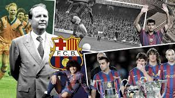

Historia del FC Barcelona. En 1899, Joan Gamper, un hombre suizo, decidió introducir el fútbol en Barcelona mediante la creación de un equipo. El club fue fundado oficialmente el veintinueve de noviembre de 1899. Creció y cobró fuerza, ganando títulos como la Copa Macaya en 1902, la Copa de los Pirineos en 1910 - 1912.
